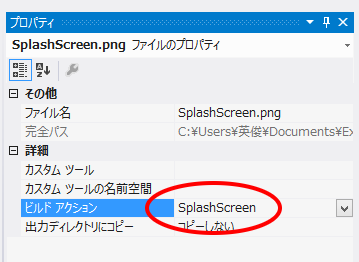

スプラッシュ スクリーン をWPFへ追加する
以下の手順でスプラッシュ スクリーン をWPFへ追加します。
- スプラッシュ スクリーンに使用するイメージを作成または検索します。BMP、GIF、JPEG、PNG、TIFF形式などを使用できます。
- イメージファイルを WPF アプリケーション プロジェクトへ追加します。
- ソリューション エクスプローラーでイメージを選択します。
- [プロパティ]ウィンドウで、[ビルドアクション]プロパティのドロップダウン矢印をクリックします。
- ドロップダウン リストの[SplashScreen]をクリックします。

- スプラッシュ スクリーンの表時間が短すぎる場合は、MainWindowのコンストラクタに待ち時間処理を追加。
(例)
public
MainWindow()
{
this.InitializeComponent();
// オブジェクト作成に必要なコードをこの点の下に挿入します。
System.Threading.Thread.Sleep(1000);
}
参考URL：
(1)
方法 : スプラッシュ スクリーンを WPF アプリケーションに追加する
(2)
SplashScreen クラス
サンプルプログラム：ダウンロード
作成： Visual Studio 2012
記載： 2012年12月07日 木下英俊